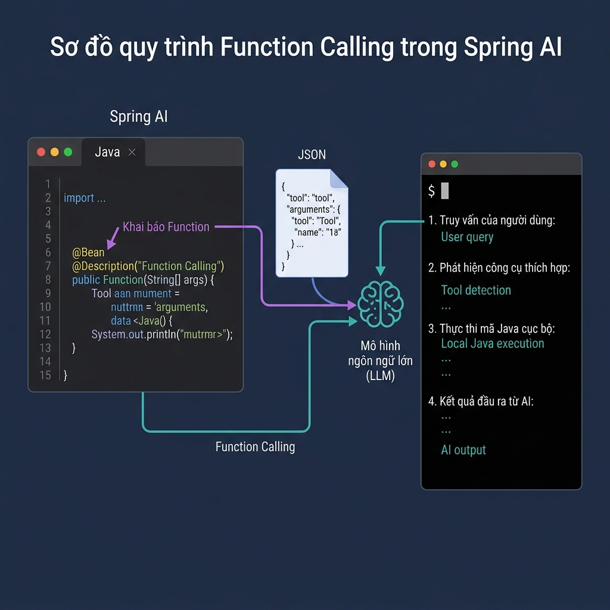
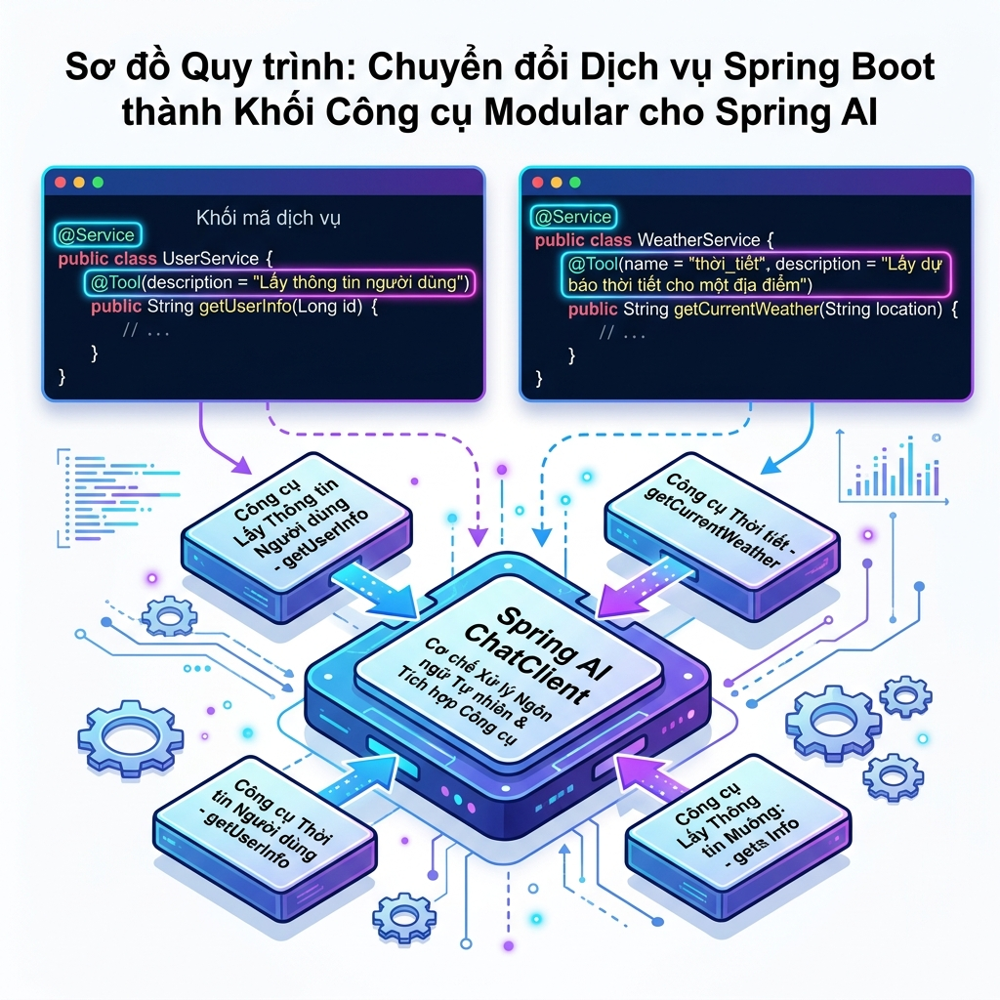
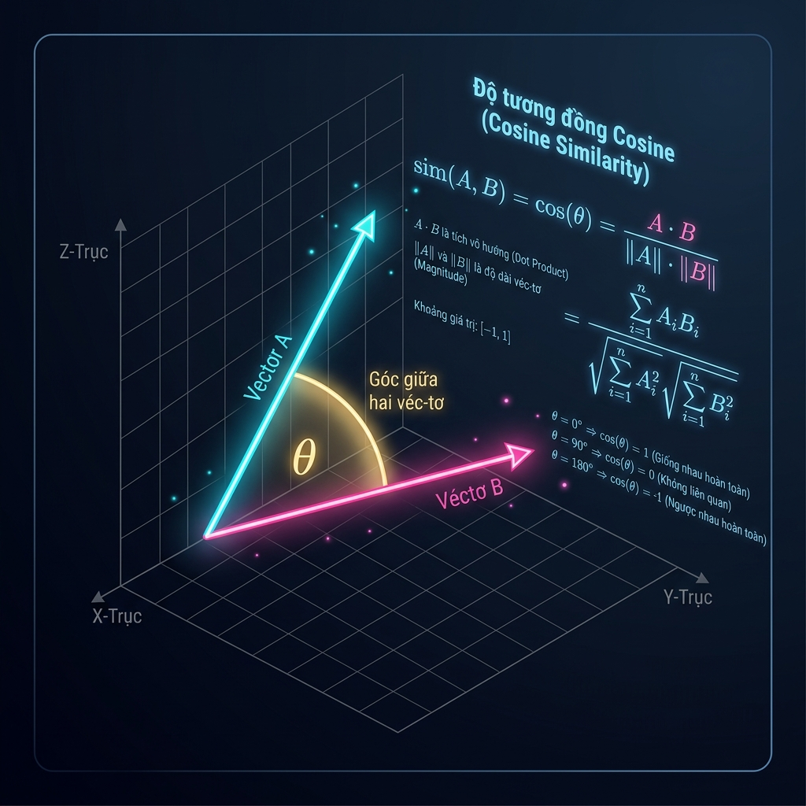
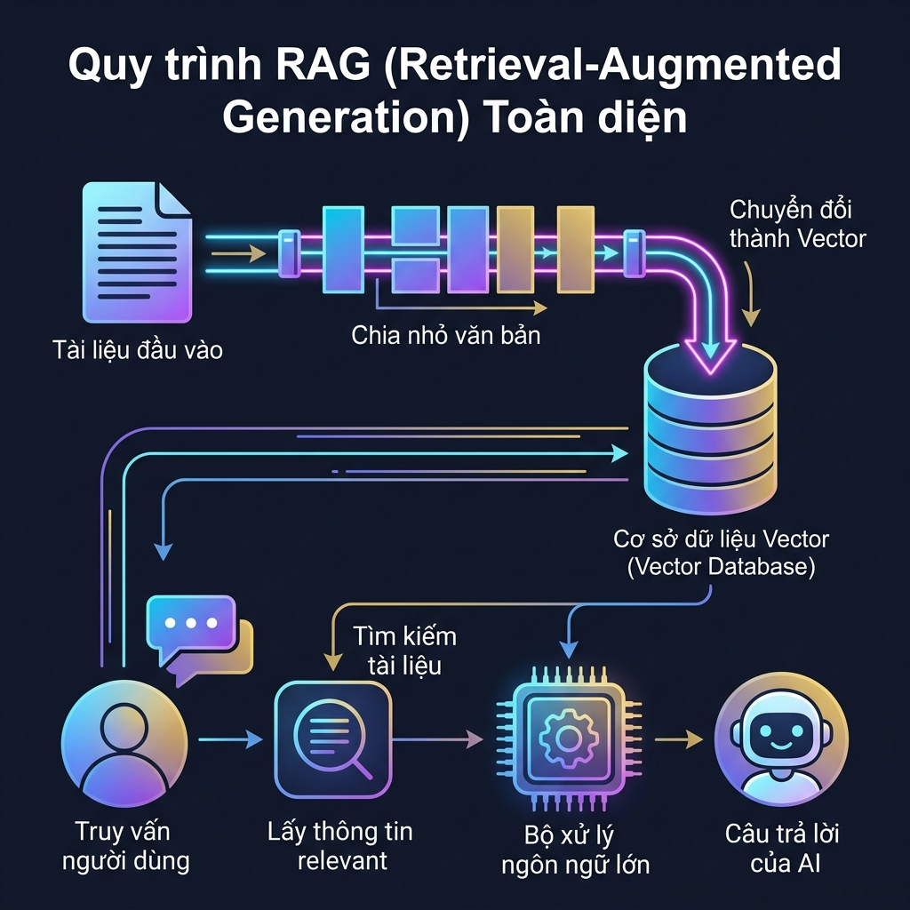

Hệ thống học liệu AI Integrated in Action
AI Integrated in Action
Khóa học thực chiến xây dựng các hệ thống AI thông minh cho lập trình viên Java và Spring Boot. Từ các khái niệm nền tảng LLM, chuẩn hóa dữ liệu, đến xây dựng AI Agent, Vector Database, RAG, MCP Protocol và LLMOps.
Định hướng môn học
Giới thiệu tổng quan nội dung & kiến thức môn học. Tại sao cần học môn này — hậu quả nếu không học.
Tích hợp LLM & Chuẩn hóa
Kiến trúc Spring AI, Streaming API, chuẩn hóa đầu ra Structured Output & ETL Pipeline.
Thực hành LLM & Spring AI
Xây dựng Multi-Model Fallback, CV Screener trích xuất thông tin, Invoice ETL Pipeline tự sửa lỗi, AI Safety.
AI Agent & Function Calling
Vòng lặp ReAct, quản lý Chat Memory, cơ chế Function Calling & xây dựng Multi-Tool Booking Agent.
Vector Database & RAG
Vector Embeddings, tính Cosine Similarity, đánh chỉ mục HNSW PGVector & xây dựng RAG Chatbot tài liệu nội bộ.
1.1 AI Agent là gì?
Khác với mô hình ngôn ngữ (LLM) thông thường chỉ nhận Input và tạo ra Output (dạng Stateless), AI Agent là một hệ thống có khả năng tự động thực hiện các hành động phức tạp bằng cách lặp lại chu kỳ: Reasoning (Tư duy) -> Acting (Hành động) -> Observing (Quan sát).
- Reasoning (Tư duy): Đánh giá ý định của người dùng và quyết định hành động tiếp theo.
- Acting (Hành động): Sử dụng các công cụ bên ngoài (Database, API, hệ thống thanh toán).
- Observing (Quan sát): Đọc kết quả trả về từ hành động để lập kế hoạch cho bước tiếp theo.
LLM thông thường: Giống như một nhà thông thái chỉ biết trả lời câu hỏi dựa trên kiến thức có sẵn trong đầu.
AI Agent: Giống như một nhân viên có máy tính riêng, có quyền truy cập Internet, database và có thể thay bạn gọi hàm, thực thi các nghiệp vụ thực tế từ A-Z.
1.2 Mô hình ReAct (Reason + Act)
ReAct là một trong những framework phổ biến nhất giúp Agent hoạt động hiệu quả bằng cách kết hợp khả năng lập luận logic của LLM với khả năng tương tác môi trường bên ngoài:
[User Request] ──> [Thought (LLM lập luận)] ──> [Action (Gọi Tool)] ──> [Observation (Kết quả từ Tool)] ──> [Thought...] ──> [Final Answer]
Nếu không có vòng lặp ReAct, LLM sẽ cố gắng "đoán" kết quả và dẫn đến hiện tượng ảo tưởng (hallucination) khi gặp các câu hỏi yêu cầu dữ liệu thời gian thực hoặc ghi chép nghiệp vụ.
1.3 Chat Memory — Trí nhớ hội thoại
Mặc định LLMs là Stateless (không nhớ bất kỳ thông tin nào giữa các lượt gọi API độc lập). Để xây dựng Chatbot tự nhiên, chúng ta bắt buộc phải gửi kèm toàn bộ lịch sử trò chuyện trong mỗi lượt hỏi tiếp theo.
Spring AI cung cấp interface ChatMemory để quản lý lịch sử này hiệu quả:
| Đặc điểm | InMemoryChatMemory (RAM) | Persistent Chat Memory (Database / Redis) |
|---|---|---|
| Lưu trữ | Lưu trong RAM của JVM của ứng dụng. | Lưu vào các DB ngoài như JDBC, Redis, PostgreSQL. |
| Độ bền vững | Mất sạch dữ liệu khi restart hoặc crash ứng dụng. | Bền vững, không sợ restart máy chủ. Phù hợp chạy Production. |
| Quy mô | Phù hợp test/demo, tốn RAM nếu chat lâu. | Hỗ trợ hàng triệu session chat đồng thời nhờ DB ngoài. |
sequenceDiagram
autonumber
actor User as 👤 Client (Browser)
participant App as 💻 Spring Boot Application
participant Mem as 💾 ChatMemory (State)
participant LLM as ☁️ LLM Provider (Ollama/OpenAI)
User->>App: Gửi tin nhắn + ChatId ("Tôi muốn đặt phòng")
App->>Mem: Lấy lịch sử chat của ChatId
Mem-->>App: Trả về danh sách Messages cũ
App->>App: Tạo Prompt (Lịch sử + Tin nhắn mới)
App->>LLM: Gửi Prompt (System Prompt + History + User Message)
LLM-->>App: Phản hồi từ AI ("Chào bạn, bạn muốn đặt loại phòng nào?")
App->>Mem: Lưu tin nhắn mới của User & AI vào ChatMemory
App-->>User: Trả về câu trả lời cho client
package com.ai.function_calling.config;
import org.springframework.ai.chat.memory.ChatMemoryRepository;
import org.springframework.ai.chat.memory.InMemoryChatMemoryRepository;
import org.springframework.context.annotation.Bean;
import org.springframework.context.annotation.Configuration;
@Configuration
public class AgentConfig {
@Bean
public ChatMemoryRepository chatMemoryRepository() {
return new InMemoryChatMemoryRepository();
}
}package com.ai.function_calling.service;
import org.springframework.ai.chat.client.ChatClient;
import org.springframework.ai.chat.client.advisor.MessageChatMemoryAdvisor;
import org.springframework.ai.chat.memory.ChatMemory;
import org.springframework.ai.chat.memory.ChatMemoryRepository;
import org.springframework.ai.chat.model.ChatModel;
import org.springframework.stereotype.Service;
@Service
public class AgentChatService {
private final ChatClient chatClient;
public AgentChatService(ChatModel chatModel, ChatMemoryRepository chatMemoryRepository) {
this.chatClient = ChatClient.builder(chatModel)
.defaultSystem("Bạn là trợ lý ảo lịch sự. Hãy giúp khách hàng đặt phòng.")
.defaultAdvisors(new MessageChatMemoryAdvisor(chatMemoryRepository))
.build();
}
public String chat(String chatId, String message) {
return this.chatClient.prompt()
.user(message)
.advisors(advisorSpec -> advisorSpec.param(ChatMemory.CONVERSATION_ID, chatId))
.call()
.content();
}
}User Client
Spring Boot Client
LLM Model
Chat Memory (RAM)
2.1 Function Calling là gì?
Function Calling (Gọi hàm) là cơ chế cho phép các mô hình ngôn ngữ lớn (như GPT-4, Gemini, Qwen) kết nối trực tiếp với các API bên ngoài hoặc chạy các đoạn mã nghiệp vụ nội bộ trên máy chủ của bạn.
Điều quan trọng cần ghi nhớ: LLM không trực tiếp chạy code Java của bạn. Thay vào đó:
- LLM nhận diện câu hỏi của người dùng có chứa ý định cần lấy dữ liệu ngoài.
- LLM quyết định gọi hàm nào và tự động sinh ra đối tượng JSON chứa tham số truyền vào phù hợp.
- Spring AI nhận kết quả JSON này, tìm và thực thi hàm Java tương ứng trên Server của bạn.
- Spring AI gửi trả kết quả thực thi của hàm (dạng văn bản/JSON) về cho LLM.
- LLM đọc kết quả đó và tổng hợp thành câu trả lời tự nhiên nhất gửi tới người dùng.
2.2 Cơ chế định nghĩa Tool qua Functional Interface
Spring AI sử dụng các functional interface tiêu chuẩn của Java để định nghĩa công cụ, phổ biến nhất là java.util.function.Function<Request, Response>.
Spring AI sẽ tự động đọc cấu trúc của lớp Request (dùng Jackson và JSON Schema generator) để tạo ra bản đặc tả JSON Schema gửi tới LLM. Do đó, việc đặt tên trường rõ ràng và sử dụng annotation @JsonPropertyDescription để mô tả biến là cực kỳ quan trọng để LLM hiểu đúng và chọn đúng tool.
graph TD
A["👤 User: 'Đổi 100 USD sang VND'"] --> B["💻 Spring Boot Application"]
B -->|"Gửi Prompt + Đặc tả Tool exchange(amount, from, to)"| C["☁️ LLM Provider"]
C -->|"Nhận diện intent & trả JSON:
{ 'function': 'exchange', 'args': { 'amount': 100, 'from': 'USD', 'to': 'VND' } }"| B
B -->|"1. Parse arguments
2. Gọi Java Bean: exchangeService.apply(...)"| D["☕ Java Method (Exchange Tool)"]
D -->|"Trả về: '2,540,000 VND'"| B
B -->|"Gửi kết quả thực thi của Tool cho LLM"| C
C -->|"Hợp nhất dữ liệu & Sinh câu trả lời tự nhiên"| E["💬 AI: '100 USD đổi được 2,540,000 VND'"]
E --> B
B --> F["👤 User nhận kết quả"]

package com.ai.function_calling.service;
import com.fasterxml.jackson.annotation.JsonProperty;
import com.fasterxml.jackson.annotation.JsonPropertyDescription;
import java.util.function.Function;
import org.springframework.context.annotation.Bean;
import org.springframework.context.annotation.Configuration;
import org.springframework.context.annotation.Description;
@Configuration
public class CurrencyExchangeService {
// 1. Định nghĩa DTO Request
public record Request(
@JsonProperty(required = true)
@JsonPropertyDescription("Số tiền cần quy đổi, ví dụ: 100")
double amount,
@JsonProperty(required = true)
@JsonPropertyDescription("Mã tiền tệ gốc, ví dụ: USD, EUR")
String from,
@JsonProperty(required = true)
@JsonPropertyDescription("Mã tiền tệ đích cần chuyển đổi, ví dụ: VND")
String to
) {}
// 2. Định nghĩa DTO Response
public record Response(String result) {}
// 3. Đăng ký Function Bean
@Bean
@Description("Quy đổi tiền tệ giữa các quốc gia dựa trên tỷ giá mới nhất")
public Function exchangeCurrency() {
return request -> {
double rate = 1.0;
if ("USD".equalsIgnoreCase(request.from()) && "VND".equalsIgnoreCase(request.to())) {
rate = 25400.0;
}
double finalAmount = request.amount() * rate;
return new Response(String.format("%,.0f %s", finalAmount, request.to()));
};
}
} User Client
Spring Boot Client
LLM Model
3.1 Khái niệm Tool trong Spring AI 1.1.5
Trong các phiên bản Spring AI gần đây (1.1.5 trở đi), một cơ chế đóng gói mới đã được giới thiệu giúp đơn giản hóa việc chuyển đổi các Service hiện có thành công cụ cho AI, đó là sử dụng annotation @Tool.
Trước đây, chúng ta phải khai báo thủ công từng Bean java.util.function.Function gây rườm rà và khó tái sử dụng code. Với @Tool, ta có thể trực tiếp đánh dấu một method trong bất kỳ lớp @Service hoặc @Component nào.
3.2 Ưu điểm nổi bật
- Dễ tích hợp: Không cần cấu hình lại các method dưới dạng Functional Interface. Một Service thông thường có thể chứa nhiều Tool khác nhau.
- Hỗ trợ `@ToolContext`: Cho phép truyền dữ liệu trạng thái ẩn hoặc thông tin bảo mật (như JWT token, User ID, Transaction ID) xuyên suốt quá trình gọi hàm của Agent mà LLM không được phép nhìn thấy hoặc làm thay đổi.
- Tự động tạo Schema từ Javadoc: Spring AI có khả năng đọc Javadoc của phương thức để làm mô tả đặc tả cho LLM, giảm thiểu viết code thừa.
graph TD
subgraph "Tầng Quét Linh Kiện (Component Scanning)"
A["@Service
CustomerSupportService"] -->|"Quét các annotation"| B["Method: calculatePointsToUpgrade(...)
@Tool(description = 'Tính điểm lên hạng')"]
end
subgraph "Cấu hình ChatClient"
C["ChatClient.builder(chatModel)
.defaultTools(customerSupportService)
.build()"]
end
B -->|"Tự động đăng ký làm Tool"| C
C -->|"1. Đọc tên hàm & kiểu dữ liệu
2. Tạo JSON Schema"| D["Đặc tả gửi đến LLM"]
style A fill:#1e293b,color:#fff,stroke:#64748b
style B fill:#15803d,color:#fff,stroke:#22c55e
style C fill:#4f46e5,color:#fff,stroke:#818cf8
style D fill:#b45309,color:#fff,stroke:#f59e0b

package com.ai.function_calling.service;
import org.springframework.ai.tool.annotation.Tool;
import org.springframework.stereotype.Service;
import lombok.extern.slf4j.Slf4j;
import java.util.Map;
@Slf4j
@Service
public class CustomerSupportService {
private final Map customerDb = Map.of(
"C001", "Nguyễn Minh Chinh - Hạng: VIP - Điểm tích lũy: 1200",
"C002", "Trần Quốc Anh - Hạng: Gold - Điểm tích lũy: 450",
"C003", "Lê Thu Thảo - Hạng: Member - Điểm tích lũy: 50"
);
@Tool(description = "Tra cứu thông tin khách hàng (hạng và điểm tích lũy) bằng ID khách hàng")
public String getCustomerDetails(String customerId) {
log.info("🎯 Gọi Tool getCustomerDetails cho ID: {}", customerId);
return customerDb.getOrDefault(customerId, "Không tìm thấy thông tin");
}
@Tool(description = "Tính điểm tích lũy cần thiết để nâng hạng thành viên tiếp theo")
public String calculatePointsToUpgrade(String customerId) {
log.info("🎯 Gọi Tool calculatePointsToUpgrade cho ID: {}", customerId);
if (!customerDb.containsKey(customerId)) return "Không tìm thấy khách hàng";
String info = customerDb.get(customerId);
if (info.contains("VIP")) {
return "Khách hàng đã đạt hạng cao nhất (VIP)";
} else if (info.contains("Gold")) {
return "Cần thêm 550 điểm để nâng lên hạng VIP";
} else {
return "Cần thêm 400 điểm để nâng lên hạng Gold";
}
}
} package com.ai.function_calling.service;
import org.springframework.ai.chat.client.ChatClient;
import org.springframework.ai.chat.model.ChatModel;
import org.springframework.stereotype.Service;
@Service
public class CustomerAgentService {
private final ChatClient chatClient;
public CustomerAgentService(ChatModel chatModel, CustomerSupportService customerService) {
this.chatClient = ChatClient.builder(chatModel)
.defaultSystem("Bạn là trợ lý chăm sóc khách hàng chuyên nghiệp. Hãy tra cứu và trả lời các câu hỏi về thành viên.")
.defaultTools(customerService) // Tự động quét và đăng ký các method @Tool
.build();
}
public String handleCustomerQuery(String query) {
return this.chatClient.prompt()
.user(query)
.call()
.content();
}
}Spring Boot Client
LLM Model
4.1 Khái niệm Đa công cụ (Multi-Tool Agent)
Trong thực tiễn, một yêu cầu của khách hàng thường phức tạp và không thể xử lý bằng một công cụ đơn lẻ. Agent cần phải tự động lên kế hoạch và liên kết chuỗi các công cụ khác nhau để hoàn thành nhiệm vụ.
Bước 1: getRoomAvailability (Kiểm tra xem còn phòng trống loại Deluxe hay không).
Bước 2: calculateTotalPrice (Tính toán tổng số tiền dựa trên số đêm khách ở).
Bước 3: createBooking (Sau khi khách xác nhận giá, tiến hành tạo bản ghi đặt chỗ trong Database).
4.2 Chat Memory kết hợp Tool Calling
Để Agent hoạt động trơn tru trong cuộc đối thoại dài, nó cần sự phối hợp giữa Chat Memory (nhớ tên khách, loại phòng, số đêm khách cung cấp ở các câu trước) và Tool Calling (thực thi API kiểm tra và đặt dữ liệu thật).
Nếu thiếu một trong hai, AI sẽ hoạt động không chính xác (hỏi lại thông tin cũ hoặc không có dữ liệu thực tế tại thời điểm chạy).
sequenceDiagram
autonumber
actor User as 👤 Khách hàng
participant Agent as 🤖 AI Agent (ChatClient)
participant DB as 💾 Database (Spring Service)
User->>Agent: "Tôi muốn đặt phòng Deluxe 2 đêm"
Note over Agent: Chat Memory lưu ý định:
- Loại phòng: Deluxe
- Số đêm: 2
Agent->>DB: Gọi Tool checkRoomAvailability("Deluxe")
DB-->>Agent: Trả về: "Deluxe còn trống 3 phòng"
Agent->>DB: Gọi Tool calculateTotalPrice("Deluxe", 2)
DB-->>Agent: Trả về: "Tổng giá tiền: 3,000,000 VND"
Agent-->>User: "Phòng Deluxe còn trống. Tổng chi phí là 3M VND. Bạn có đồng ý đặt không?"
User->>Agent: "Ok tôi đồng ý, tên tôi là Minh Chinh"
Agent->>DB: Gọi Tool createBooking("Minh Chinh", "Deluxe", 2)
DB-->>Agent: Trả về: "Đặt phòng thành công, mã đặt chỗ: BK-9921"
Agent-->>User: "Cảm ơn anh Chinh! Mã đặt chỗ của anh là BK-9921."
package com.ai.function_calling.service;
import org.springframework.ai.tool.annotation.Tool;
import org.springframework.stereotype.Service;
import lombok.extern.slf4j.Slf4j;
import java.util.concurrent.ConcurrentHashMap;
import java.util.UUID;
@Slf4j
@Service
public class HotelBookingService {
private final ConcurrentHashMap bookings = new ConcurrentHashMap<>();
@Tool(description = "Kiểm tra phòng trống của một loại phòng cụ thể (STANDARD, DELUXE, SUITE)")
public String checkRoomAvailability(String roomType) {
log.info("🎯 Gọi Tool checkRoomAvailability cho: {}", roomType);
return "Phòng loại " + roomType.toUpperCase() + " còn trống 3 phòng.";
}
@Tool(description = "Tính tổng tiền đặt phòng dựa vào loại phòng và số đêm lưu trú")
public String calculateTotalPrice(String roomType, int nights) {
log.info("🎯 Gọi Tool calculateTotalPrice cho: {}, số đêm: {}", roomType, nights);
double pricePerNight = 1000000.0;
if ("DELUXE".equalsIgnoreCase(roomType)) pricePerNight = 1500000.0;
if ("SUITE".equalsIgnoreCase(roomType)) pricePerNight = 3000000.0;
double total = pricePerNight * nights;
return String.format("Tổng tiền đặt phòng: %,.0f VND", total);
}
@Tool(description = "Thực hiện đặt phòng chính thức sau khi khách xác nhận thông tin")
public String createBooking(String customerName, String roomType, int nights) {
log.info("🎯 Gọi Tool createBooking cho: {}, phòng: {}", customerName, roomType);
String bookingId = "BK-" + UUID.randomUUID().toString().substring(0, 4).toUpperCase();
bookings.put(bookingId, customerName + " - " + roomType + " - " + nights + " đêm");
return "Đặt phòng thành công! Mã đặt phòng của bạn là: " + bookingId;
}
} package com.ai.function_calling.service;
import org.springframework.ai.chat.client.ChatClient;
import org.springframework.ai.chat.client.advisor.MessageChatMemoryAdvisor;
import org.springframework.ai.chat.memory.ChatMemory;
import org.springframework.ai.chat.memory.ChatMemoryRepository;
import org.springframework.ai.chat.model.ChatModel;
import org.springframework.stereotype.Service;
@Service
public class HotelAgentService {
private final ChatClient chatClient;
public HotelAgentService(ChatModel chatModel, ChatMemoryRepository memoryRepo, HotelBookingService bookingService) {
this.chatClient = ChatClient.builder(chatModel)
.defaultSystem("""
Bạn là Trợ lý ảo đặt phòng tại khách sạn Rikkei Luxury Hotel.
Nhiệm vụ của bạn là kiểm tra thông tin phòng trống và hoàn tất việc đặt phòng.
Quy trình:
1. Kiểm tra phòng trống bằng checkRoomAvailability.
2. Tính giá tiền bằng calculateTotalPrice.
3. Yêu cầu tên khách hàng và xác nhận trước khi gọi createBooking.
""")
.defaultAdvisors(new MessageChatMemoryAdvisor(memoryRepo))
.defaultTools(bookingService) // Đăng ký bộ 3 công cụ liên kết
.build();
}
public String chat(String chatId, String message) {
return this.chatClient.prompt()
.user(message)
.advisors(spec -> spec.param(ChatMemory.CONVERSATION_ID, chatId))
.call()
.content();
}
}User Client
Spring Boot Client
LLM Model
Spring DB Service
1.1 Embeddings là gì?
Trong thế giới của học máy và LLM, máy tính không thể hiểu trực tiếp các từ ngữ hoặc văn bản theo cách của con người. Để xử lý, chúng ta cần số hóa văn bản thành các chuỗi số thực có độ dài cố định, được gọi là Vector Embeddings.
Một Embedding Vector đại diện cho ngữ nghĩa của văn bản chứ không phải là các ký tự thô:
- Các văn bản có nội dung/ngữ nghĩa tương tự nhau (ví dụ: *"Hôm nay trời mưa to"* và *"Thời tiết ẩm ướt do mưa lớn"*) sẽ có các vector nằm rất gần nhau trong không gian đa chiều.
- Các văn bản có nghĩa khác biệt hoàn toàn (ví dụ: *"Báo cáo tài chính quý 1"* và *"Cách nấu phở bò"*) sẽ nằm rất xa nhau.
Mỗi mô hình embedding sẽ cho ra vector có số chiều cố định:
- OpenAI text-embedding-3-small: 1536 chiều.
- Google Gemini text-embedding-004: 768 chiều.
- Ollama nomic-embed-text (Local): 768 chiều.
1.2 Keyword Search vs. Semantic Search
| Đặc điểm | Keyword Search (LIKE, BM25) | Semantic Search (Vector Embeddings) |
|---|---|---|
| Cơ chế | Tìm kiếm chính xác ký tự trùng khớp (Exact match). | Tìm kiếm dựa trên ý nghĩa ngữ cảnh và khái niệm. |
| Xử lý từ đồng nghĩa | Kém. Tìm "điện thoại" sẽ bỏ sót "smartphone". | Tốt. Hiểu rằng chúng biểu diễn cùng một khái niệm. |
| Sai chính tả | Rất khó khăn, cần các cấu hình fuzzy phức tạp. | Khá tốt do ngữ cảnh chung của câu vẫn giữ lại được. |
| Chi phí tính toán | Thấp, dễ dàng đánh chỉ mục (Index B-Tree). | Cao hơn do cần tính toán khoảng cách vector đa chiều. |
sequenceDiagram
autonumber
actor User as 👤 Client (Browser)
participant App as 💻 Spring Boot (Spring AI)
participant Model as ☁️ Embedding Model (Gemini/OpenAI)
User->>App: Gửi văn bản cần vector hóa ("Rikkei Education")
App->>Model: Gọi API EmbeddingModel.embed(Document)
Model-->>App: Trả về đối tượng Embedding (chứa vector [0.012, -0.098, ...])
App->>App: Trích xuất mảng float[] vector từ kết quả
App-->>User: Trả về danh sách tọa độ vector cho client
package com.ai.vector_rag.service;
import org.springframework.ai.embedding.EmbeddingModel;
import org.springframework.stereotype.Service;
@Service
public class EmbeddingService {
private final EmbeddingModel embeddingModel;
// Spring AI tự động cấu hình và tiêm Bean EmbeddingModel dựa trên starter trong POM/Gradle
public EmbeddingService(EmbeddingModel embeddingModel) {
this.embeddingModel = embeddingModel;
}
public float[] getEmbedding(String text) {
return this.embeddingModel.embed(text);
}
}Spring Boot Client
Embedding Model
2.1 Phép toán Cosine Similarity
Sau khi đã số hóa văn bản thành vector, làm thế nào để biết hai văn bản có nghĩa giống nhau? Chúng ta cần đo góc lệch giữa hai mũi tên (vector) đó trong không gian đa chiều.
Phép toán phổ biến nhất là Cosine Similarity (Độ tương đồng Cosine). Công thức đo cos của góc tạo bởi hai vector:
Cosine Similarity(A, B) = (A · B) / (||A|| * ||B||)
Giá trị Cosine trả về:
- 1: Góc lệch bằng 0 độ, hai vector trùng hướng hoàn toàn (Ngữ nghĩa giống hệt nhau).
- 0: Góc lệch 90 độ, hai vector vuông góc (Không liên quan ngữ nghĩa).
- -1: Góc lệch 180 độ, hai vector ngược hướng hoàn toàn (Ngữ nghĩa trái ngược).
2.2 Thuật toán Top-K Search
Quy trình lọc tìm ngữ nghĩa gồm 4 bước:
- Chuyển câu hỏi (Query) của người dùng thành Query Vector ($V_q$).
- Tính Cosine Similarity giữa $V_q$ với tất cả các vector tài liệu trong bộ nhớ.
- Sắp xếp danh sách kết quả theo điểm số giảm dần.
- Lấy ra $K$ tài liệu có điểm số cao nhất (Top-K) để trả về cho người dùng hoặc bồi đắp vào Prompt.
graph TD
A["👤 User nhập Query: 'Cách cấu hình JDBC'"] --> B["💻 Chuyển thành Query Vector (V_q)"]
B --> C["🧮 Tính Cosine Similarity với mọi Document Vector trong bộ nhớ"]
C -->|"Doc 1: 'Spring Boot Database config' (Score: 0.89)"| D["Sắp xếp điểm số giảm dần"]
C -->|"Doc 2: 'Cách luộc gà ngon nhất' (Score: 0.12)"| D
C -->|"Doc 3: 'Cài đặt datasource driver' (Score: 0.85)"| D
D --> E["Lọc lấy Top-K (Ví dụ K = 2)"]
E --> F["Trả về Doc 1 & Doc 3 cho người dùng"]
style A fill:#0f172a,color:#fff
style B fill:#1e293b,color:#fff
style C fill:#4f46e5,color:#fff
style D fill:#b45309,color:#fff
style E fill:#15803d,color:#fff
style F fill:#0369a1,color:#fff

package com.ai.vector_rag.util;
public class VectorUtils {
public static double cosineSimilarity(float[] vectorA, float[] vectorB) {
if (vectorA.length != vectorB.length) {
throw new IllegalArgumentException("Hai vector phải có cùng số chiều");
}
double dotProduct = 0.0;
double normA = 0.0;
double normB = 0.0;
for (int i = 0; i < vectorA.length; i++) {
dotProduct += vectorA[i] * vectorB[i];
normA += Math.pow(vectorA[i], 2);
normB += Math.pow(vectorB[i], 2);
}
if (normA == 0 || normB == 0) return 0.0; // Tránh chia cho 0
return dotProduct / (Math.sqrt(normA) * Math.sqrt(normB));
}
}Cosine Math Engine
3.1 Tại sao cần Vector Database chuyên dụng?
Khi dữ liệu tăng lên hàng triệu bản ghi, việc duyệt tuyến tính (Linear Scan - $O(N)$) trong RAM để tính Cosine Similarity sẽ làm sập máy chủ do tốn CPU và độ trễ quá cao. Chúng ta cần hệ cơ sở dữ liệu tối ưu riêng cho việc lập chỉ mục (Indexing) và lưu trữ vector, được gọi là Vector Database.
Các Vector Database cung cấp thuật toán tìm kiếm lân cận gần đúng (Approximate Nearest Neighbor - ANN) để truy vấn thời gian thực với độ phức tạp chỉ ở mức $O(\log N)$.
3.2 Hệ sinh thái Vector DB
- PGVector: Extension nguồn mở cho PostgreSQL. Rất được ưa chuộng bởi lập trình viên Java/Spring vì tận dụng ngay hệ thống dữ liệu quan hệ sẵn có.
- Supabase: Nền tảng cloud tích hợp sẵn PGVector.
- Pinecone / Milvus: Hệ quản trị Vector DB chuyên biệt, cực mạnh cho dữ liệu khổng lồ.
3.3 Các thuật toán lập chỉ mục (Indexing)
- IVFFlat (Inverted File Flat): Phân cụm không gian vector. Tìm kiếm nhanh, ít tốn RAM nhưng độ chính xác ở mức trung bình.
- HNSW (Hierarchical Navigable Small World): Xây dựng đồ thị đa tầng liên kết các vector. Tốc độ siêu nhanh, chính xác cao nhưng tốn nhiều RAM.
sequenceDiagram
autonumber
participant App as 💻 Spring Boot Application
participant DB as 🐘 PostgreSQL + PGVector
Note over DB: Khởi tạo bảng với cột kiểu vector(1536)
App->>DB: Thực hiện câu lệnh SQL tạo HNSW Index
App->>DB: INSERT INTO items (content, embedding) VALUES ('...', '[0.012, ...]')
rect rgb(30, 41, 59)
Note over App, DB: Quá trình tìm kiếm ngữ nghĩa
App->>DB: SELECT content, 1 - (embedding <=> '[0.091, ...]') AS similarity FROM items ORDER BY similarity DESC LIMIT 2
DB-->>App: Trả về các dòng dữ liệu khớp kèm điểm số tương đồng
end
dependencies {
implementation 'org.springframework.boot:spring-boot-starter-web'
implementation 'org.springframework.ai:spring-ai-starter-model-openai'
// Dependency cho PGVector VectorStore
implementation 'org.springframework.ai:spring-ai-pgvector-store-starter'
runtimeOnly 'org.postgresql:postgresql'
}package com.ai.vector_rag.service;
import org.springframework.ai.document.Document;
import org.springframework.ai.vectorstore.SearchRequest;
import org.springframework.ai.vectorstore.VectorStore;
import org.springframework.stereotype.Service;
import java.util.List;
import java.util.Map;
@Service
public class VectorDbService {
private final VectorStore vectorStore;
// PgVectorVectorStore tự động được tiêm vào thông qua starter
public VectorDbService(VectorStore vectorStore) {
this.vectorStore = vectorStore;
}
public void addDocument(String id, String content, Map metadata) {
Document doc = new Document(id, content, metadata);
this.vectorStore.add(List.of(doc)); // Tự động gọi Embedding API & lưu DB
}
public List searchRelated(String query, int topK) {
SearchRequest searchRequest = SearchRequest.defaults()
.withQuery(query)
.withTopK(topK)
.withSimilarityThreshold(0.7);
return this.vectorStore.similaritySearch(searchRequest);
}
} Spring Boot Client
Postgres (PGVector)
4.1 Khái niệm RAG (Retrieval-Augmented Generation)
Mặc dù các mô hình ngôn ngữ lớn (LLM) có kiến thức khổng lồ, chúng vẫn có 3 điểm yếu chí mạng:
- Knowledge Cutoff (Giới hạn kiến thức): Không biết thông tin mới cập nhật sau thời điểm huấn luyện.
- Hallucination (Ảo tưởng): Tự "bịa" ra thông tin sai sự thật một cách rất thuyết phục khi không có sẵn dữ liệu.
- Không có kiến thức nội bộ: Không thể truy cập tài liệu mật hoặc quy trình nghiệp vụ nội bộ của công ty.
Để giải quyết triệt để mà không cần Fine-tuning tốn kém, chúng ta sử dụng kỹ thuật RAG (Tạo câu trả lời tăng cường bằng truy xuất).
4.2 Luồng xử lý chi tiết
1. Đọc tài liệu (PDF, Word, Markdown, Webpage).
2. Cắt nhỏ tài liệu (Chunking) thành từng đoạn nhỏ (ví dụ: 500 ký tự).
3. Embedding chuyển từng đoạn thành vector.
4. Lưu trữ cặp [đoạn văn bản + vector] vào Vector Database.
1. Nhận câu hỏi từ User -> Chuyển thành vector.
2. Tìm kiếm tương đồng ngữ nghĩa trong Vector DB để lấy ra Top-K tài liệu khớp nhất.
3. Bồi đắp Prompt mới: Hợp nhất [Câu hỏi] + [Ngữ cảnh tài liệu tìm được] thành Prompt tối ưu.
4. Gửi Prompt bồi đắp sang LLM để sinh câu trả lời chính xác, loại bỏ ảo tưởng.
sequenceDiagram
autonumber
actor User as 👤 Người dùng
participant App as 💻 Spring Boot Application
participant DB as 💾 Vector Database (Postgres)
participant LLM as ☁️ LLM Model (Gemini/OpenAI)
User->>App: Gửi câu hỏi ("Khách sạn có phạt nếu hút thuốc không?")
App->>DB: Truy vấn lân cận (Similarity Search) với câu hỏi
DB-->>App: Trả về: "Quy định cấm hút thuốc, phạt 2,000,000 VND"
App->>App: Bồi đắp Prompt (Hợp nhất Câu hỏi + Ngữ cảnh quy định phạt)
App->>LLM: Gửi Prompt hoàn chỉnh (Prompt + Context)
LLM-->>App: Trả về: "Có, khách sạn cấm hút thuốc hoàn toàn và nếu vi phạm bạn sẽ bị phạt 2 triệu VND."
App-->>User: Trả về câu trả lời chính xác cho người dùng

package com.ai.vector_rag.service;
import org.springframework.ai.chat.client.ChatClient;
import org.springframework.ai.chat.client.advisor.QuestionAnswerAdvisor;
import org.springframework.ai.chat.model.ChatModel;
import org.springframework.ai.vectorstore.SearchRequest;
import org.springframework.ai.vectorstore.VectorStore;
import org.springframework.stereotype.Service;
@Service
public class RagChatService {
private final ChatClient chatClient;
public RagChatService(ChatModel chatModel, VectorStore vectorStore) {
this.chatClient = ChatClient.builder(chatModel)
.defaultAdvisors(new QuestionAnswerAdvisor(vectorStore, SearchRequest.defaults()))
.build();
}
public String askUsingRag(String question) {
return this.chatClient.prompt()
.user(question)
.call()
.content();
}
}User Client
Spring Boot Client
LLM Model
PGVector DB